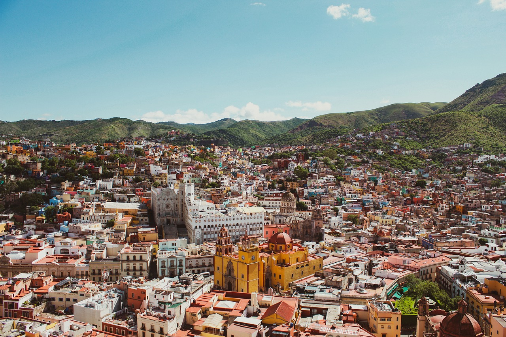
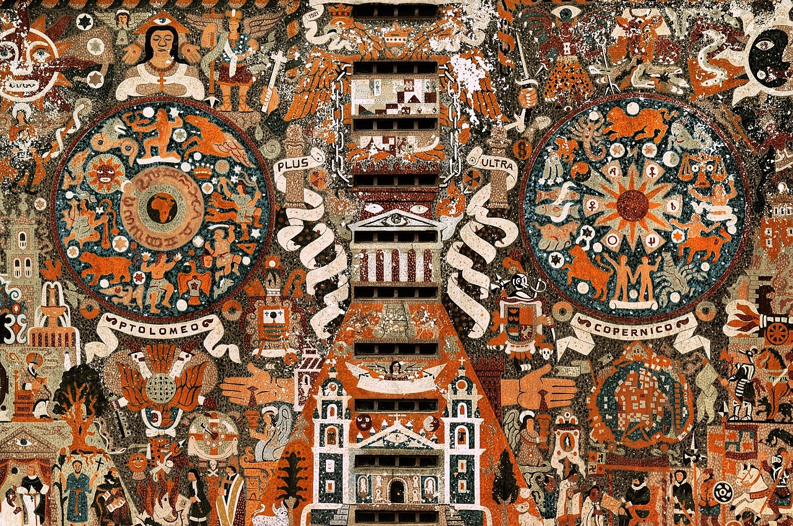
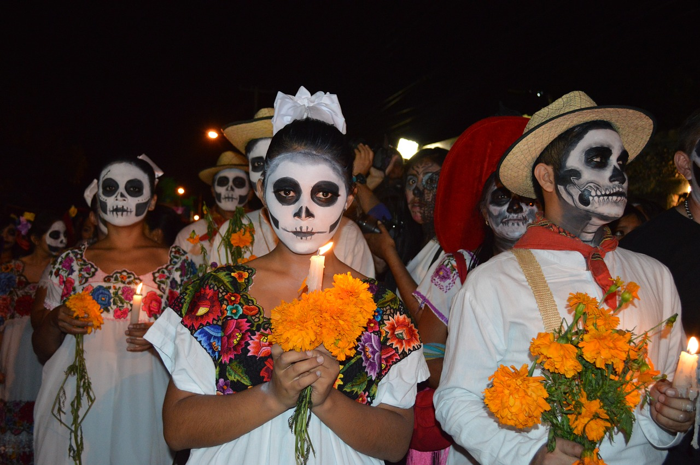
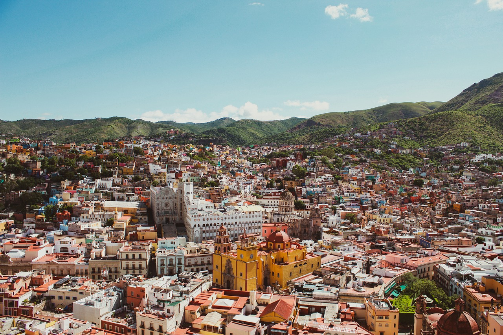
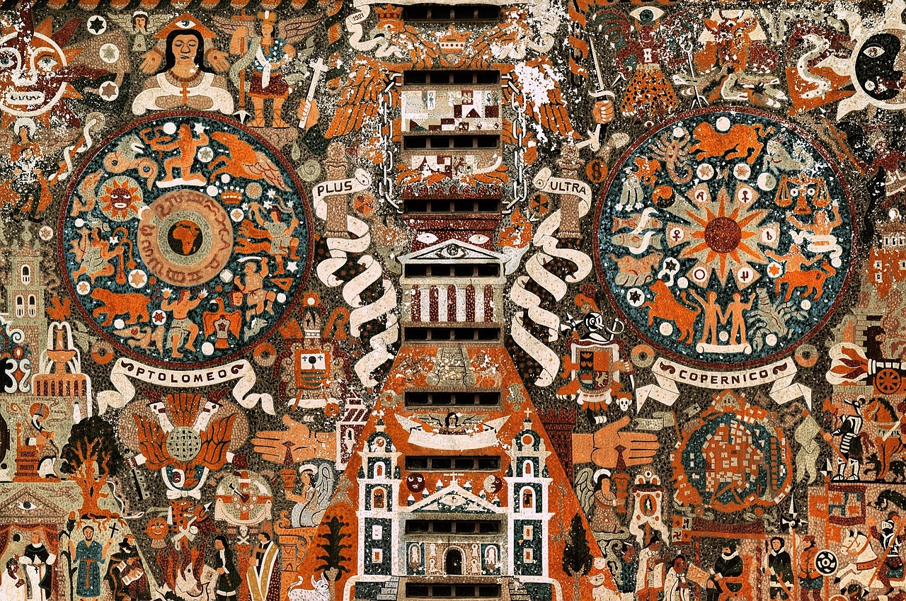
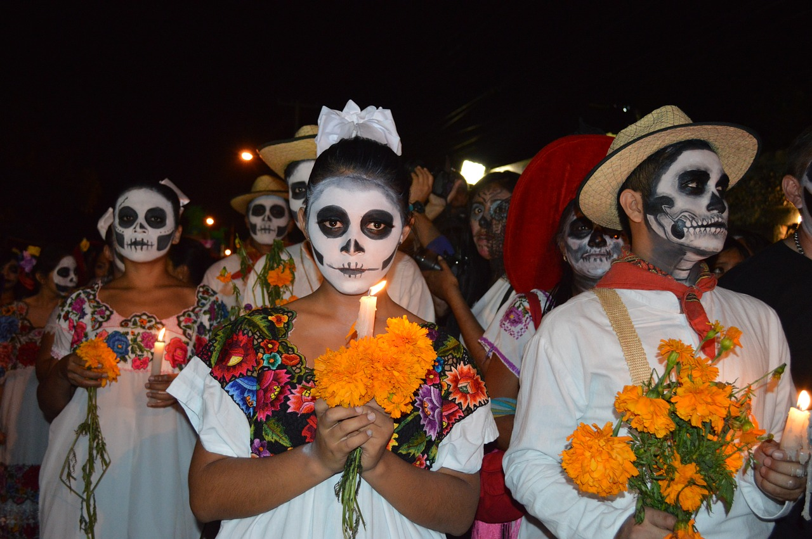
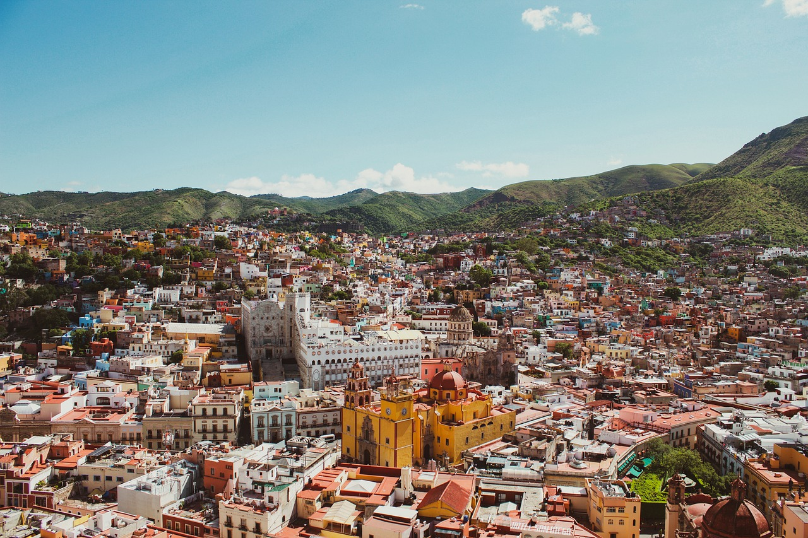
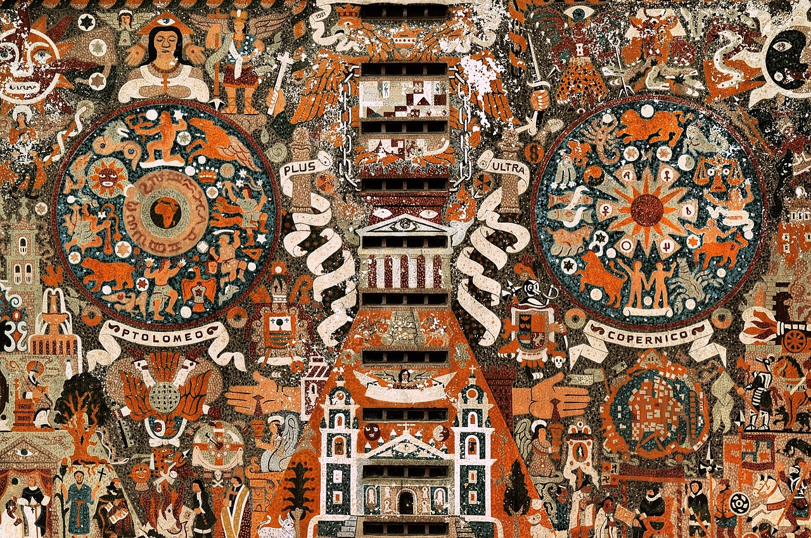
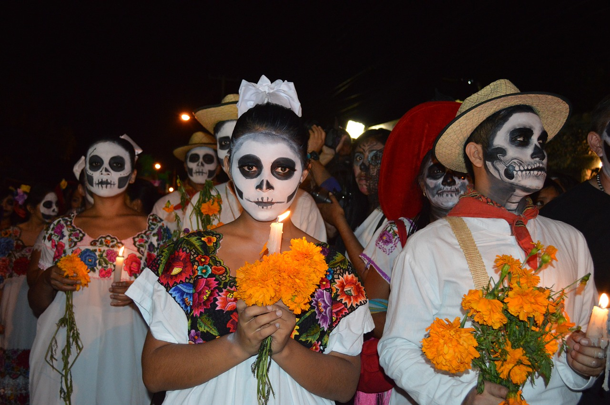
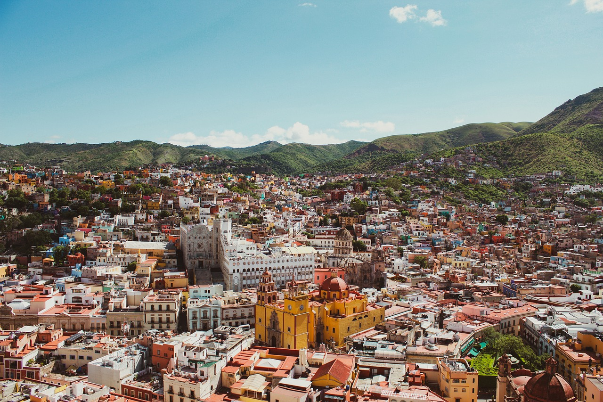
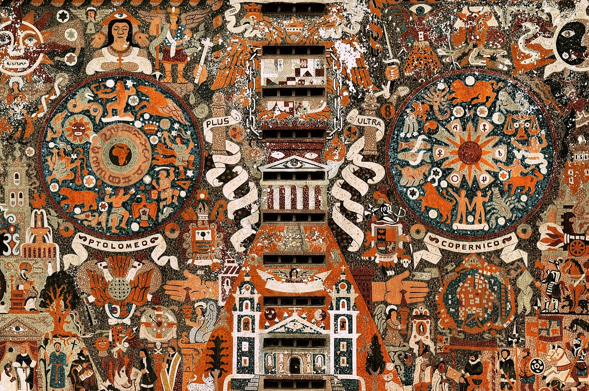
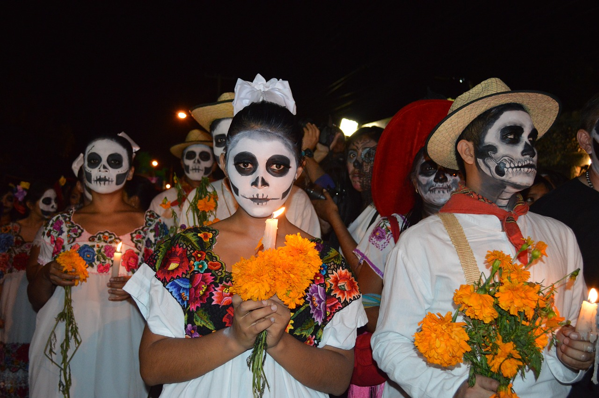
Situé entre les États-Unis et l'Amérique centrale, le Mexique est un pays réputé pour ses plages du Pacifique et du golfe du Mexique, ainsi que pour ses paysages variés - entre montagnes, déserts et jungles. Il est pourvu de ruines anciennes comme Teotihuacan et la cité maya de Chichén Itzá ainsi que de villes datant de l'époque coloniale espagnole. Sa capitale Mexico propose un retour à la modernité avec ses boutiques haut de gamme, ses musées renommés et ses restaurants gastronomiques.
Mars, 12, 2022
Le Temple Kukulcan : aussi appelé El Castillo, c’est le bâtiment le plus symbolique de Chichen Itza. Il a été construit en l’honneur du dieu serpent à plume toltèque du même nom. Au moment des équinoxes et solstice d’été, le soleil crée des jeux d’ombre formant un serpent sur les escaliers.
unknown
Mars, 12, 2022
Les cénotes, ces fosses naturelles qui résultent de l'effondrement du socle calcaire et qui exposent les eaux souterraines en dessous, sont particulièrement typiques de cette région. Leur nom vient d'un mot maya signifiant "puits sacré", et ils étaient parfois utilisés par les Mayas pour des offrandes sacrificielles.
unknown
Mars, 12s, 2022
Quand on parle de villes coloniales, nous pouvons ajouter les « Pueblos Mágicos », qui se traduisent villages magiques ; une récompense délivrée par le ministère mexicain du Tourisme et diverses agences gouvernementales, qui reconnaissent les villes de ce pays pour leur beauté et leur travail dans la protection et la préservation de leur richesse culturelle. Comme dans tout le Mexique, les dominantes sont les couleurs ! C’est ce que nous voulons… des couleurs ! Vous pouvez le remarquer par vous-même… coloré, tout est plus beau ! À la vue de couleurs vives et chaleureuses nous devenons tout de suite plus joyeux, positif et dynamique ! Un monde coloré, c’est un monde heureux ! Alors imaginiez-vous un peu lorsque les couleurs se mélangent à la culture et au folklore mexicain ? La magie opère !
unknown